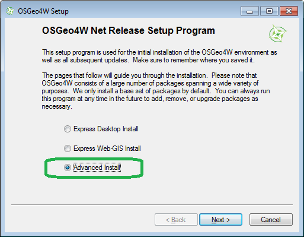

Building Under Windows¶
| Author: | Michael Rosen |
|---|---|
| Contact: | unknown at lizardtech dot com |
| Date: | 3/19/2012 |
Note
OSGeo4W contains a pre-built up-to-date 64 bit Windows binary. It is fully-featured, and if you do not need anything custom, it is likely the fastest way to get going.
See also
Vagrant contains an automated way to build PDAL and all of its dependencies on Unix. If you just want to apply PDAL commandline operations to data, this mechanism is likely to be much faster than compiling your own.
Most Users¶
If you just want to build PDAL so you can
- use the utilities or
- investigate PDAL integration
- test / fix / extend the library and
you are OK with doing all this with a 32 bit compiler, check the Prerequisites and follow the Basic Build Steps below.
Advanced Users¶
If your needs go beyond this, then check the Prerequisites and use the Advanced Build Steps below as a guide to configuring the library.
Prerequisites¶
- Ensure you have git. We used version 1.7.3.1.msysgit.0 from http://code.google.com/p/msysgit
- Ensure you have a Visual Studio 2010 environment setup. We used VStudio 2010 Premium.
- Ensure you have CMake. We used version 2.8.4 from http://www.cmake.org
The steps below assume that these tools are available from your command line. For Git and CMake, that’s just adding them to your %PATH%. For VStudio, you need to run vsvars32.bat (“Microsoft Visual Studio 10.0\Common7\Tools\vsvars32.bat”)
Basic Build Steps¶
Most users can use this procedure to build PDAL on Windows. We satisfy all dependencies using OSGeo4W and use the Boost subset that is included with the library.
0. If you plan to use LAZ support (compressed LAS), get the LASzip source code and build it (http://www.laszip.org). Add the directory with laszip.dll to your %PATH% (or copy the laszip.* files into the bin directory of PDAL itself). Make sure it appears in your PATH before OSGeo4W (as per step 4 below).
While LASzip is included in the OSGeo4W distribution below (see step 1), the version there is compiled with Visual Studio 2008 and we have some suspicion that it is incompatible with the version of PDAL you are about to build with Visual Studio 2010. Building the LASzip library should be no more complicated than:
set G="Visual Studio 10"
set BUILD_TYPE=Debug
cmake -G %G% ^
-DCMAKE_BUILD_TYPE=%BUILD_TYPE% ^
-DCMAKE_VERBOSE_MAKEFILE=OFF ^
.
1. Install OSGeo4W (http://download.osgeo.org/osgeo4w/osgeo4w-setup.exe) using the “Advanced Install” option and include the following: gdal-dev, laszip, libxml2, iconv.

- Install from Internet
- Leave the “Root Directory” for the installation unchanged.
- You can leave the “Select Local Package Directory” and “Internet Connection Type” at the defaults. Under the “libs” tree, select “gdal-dev” for installation. (You should probably use the latest version, e.g. 1.8pre-6.)
- Select “laszip” (this is not required currently – see step 0 above).
- Select “libxml2”.
- Select “iconv”.

- Select “oci”.
There are some other required dependencies (e.g. libtiff, libgeotiff) but they are installed by default.
Select Next to continue on to install the packages.
- Get the source code for PDAL:
c:\dev> git clone https://github.com/PDAL/PDAL.git
- From the root of your PDAL tree, run ”./cmake/examples/mpg-config.bat”. This will create the VStudio solution file and .vcxproj files.
c:\dev\PDAL> ./cmake/examples/mpg-config.batNote
The config.bat file is set up to build PDAL in the “officially supported” configuration – that is, with Oracle, and GDAL, and LASzip, and such. If you followed the previous steps, you should be fine to use this default configuration. You may modify this file if you need to (such as to use a local copy of GDAL or to use NMake instead of Visual Studio); see the Advanced Build Steps below for more instructions.
- Verify your system environment variables are set properly:
- PATH should include %OSGeo4W%bin
- GDAL_DATA should be set to %OSGeo4W%shareepsg_csv
- PROJ_LIB should be set to %OSGeo4W%shareproj
Start Visual Studio and open PDAL.sln. Build the solution (F6).
Set pdal_test as the startup project and run it (F5). You should see a console window startup, print something like “Running 158 test cases...” (exact number may vary), and then after a short period print something like “*** No errors detected”. If you do get errors, that means either something is broken on the version of PDAL you checked out OR something is wrong with your installation.
PYTHON/PLANG NOTE: If you build WITH_PLANG=ON in Debug mode, the system will try to link against “python27d.lib”. You need to change .../Python27/include/pyconfig.h as follows:
- change the line #pragma comment(lib,”python27d.lib”) to refer to python27.lib instead
- comment out the line “#define Py_DEBUG”
Advanced Build Steps¶
Advanced users can use this procedure to customize their PDAL build on Windows. This enables the use of custom-built external libraries to satisify situations (including x64 support) where using OSGeo4W is inadequate.
- Acquire and stage the required dependent libraries. PDAL depends on the following external libraries. You’ll need to get them and build them (or perhaps, download prebuilt binary packages).
- Boost (get version 1.4.8 or later from http://boost.org) [ required ]
- GDAL (get version 1.6 or later from http://gdal.org) [ optional ]
- LASZip (get version 1.0.1 or later from http://laszip.org) [ optional ]
- libxml2 (http://libxml2.org) [ optional ]
- iconv (http://www.gnu.org/software/libiconv/) [ optional (required by libxml2) ]
- oci (optional, http://www.oracle.com/technetwork/database/features/instant-client/index-097480.html)
- libtiff (optional)
- libgeotiff (optional)
One option for all dependencies except Boost is OSGeo4W (free, win32 installer, no x64 – see “Basic Build Steps”_ above).
Boost Build Notes
Options for Boost include might include BoostPro (free win32 installer, no x64) or the internal “BCP’ed” extract in PDAL. We say “might” because PDAL requires Boost version 1.48 or later and at this writing that’s not supported by BoostPro. If you need to build Boost from source, the following notes will be helpful.
Boost libraries include an “ABI” description as part of the name. For example
"libboost_filesystem-vc100-mt-gd-1_48.lib" ^^ This is the <abi-tag><abi-tag> - This is a string of one or more characters. For us, the characters of interest are s, g, d.
s - indicates that the library is statically linked to the C++ Standard Library and Runtime Library.
g - indicates that the debug versions of the standard and runtime support libraries are linked against. On a typical Windows installation you will get a debug version of the runtime libraries to link against, but this need not be the case on Unix boxes.
d - indicates all debug symbols are available in the library, no inlining and optimization has been done while building the code.
This is particularly important on Windows. Unlike other platforms, CRT configuration (debug vs release and statically linked vs shared dll), needs to match you PDAL configuration.
After you get the Boost archive (source) from http://www.boost.org from the root of the boost distribution run “bootstrap.bat” and then “b2” with the appropriate options.
Our default release configuration uses /MD, so you want the release shared CRT, like “libboost_filesystem-vc100-mt-1_48.lib”:
c:\utils\boost_1_48_0>.\bootstrap.bat c:\utils\boost_1_48_0>.\b2 variant=release link=static threading=multi runtime-link=shared stageOur default debug configuration uses /MDd, so you want the debug shared CRT, like “libboost_filesystem-vc100-mt-gd-1_48.lib”:
c:\utils\boost_1_48_0>.\bootstrap.bat c:\utils\boost_1_48_0>.\b2 variant=debug link=static threading=multi runtime-link=shared stageFinally, we’ve seen problems with b2.exe if the path includes some paths that are quoted (“c:\Program Files (x86)\doxygen\bin”). You can unquote or remove them from the %PATH% while building Boost.
- Having staged the above libs, you need to specify where they are by editing the appropriate lines in the “config.bat” file. Each dependency has a short section of the config.bat file. Check these are specified correctly. For example
:: LASZIP set LASZIP_ENABLED=ON set LASZIP_LIBRARY=%DEV_DIR%\laszip\bin\Debug\laszip.lib set LASZIP_INCLUDE_DIR=%DEV_DIR%\laszip\include
- While you’re still in config.bat, configure the “Generator” for CMake.
:: Pick your Generator. NMake will pick up architecture (x32, x64) from your environment rem set GENERATOR="NMake Makefiles" rem set GENERATOR="Visual Studio 10 Win64" set GENERATOR="Visual Studio 10" set BUILD_TYPE=Release rem set BUILD_TYPE=Debug
- Run “config.bat” in the PDAL directory. This will create the VStudio solution file and .vcxproj files.
c:\dev\PDAL> config.bat
- Start Visual Studio and open PDAL.sln (or if you picked “NMake Makefiles”, run NMake).
Testing¶
Set pdal_test as the default/startup application in Visual Studio Run with debug (F5)
Troubleshooting¶
- Missing liblas.dll - double check that
C:\OSGeo4W\binis on your system PATH variable - libtiff.dll errors - double check that other versions of the lib are not on the path. For example, ArcGIS installs a version of libtiff that is not compatible.
- “ERROR 4: Unable to open EPSG support file gcs.csv” or GDAL_DATA variable errors - Set GDAL_DATA system variable to
C:\OSGeo4W\share\gdal - PROJ errors - Set PROJ_LIB system variable to
C:\OSGeo4W\share\proj - link failures due to _ITERATOR_DEBUG_LEVEL mismatches between (external) boost and PDAL. Most likely problem is that you are mixing Release and Debug libs (e.g. PDAL is debug but Boost is release). You can also set _ITERATOR_DEBUG_LEVEL=0 as in Project Pages / Configuration Properties / C,C++ / Preprocessor / Preprocessor Definitions.